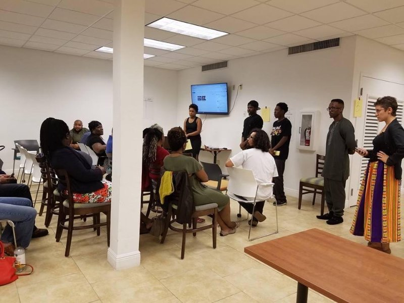

Deerfield Beach Middle School
- June 2016-June 2017
- 8th Grade U.S. History Instructor
Responsibilities
- Teach 2 Advanced Classes & 3 Regular Classes
- Instruct a population of students with high levels of:
- Learning disabilities
- Behavioral issues
- Emotional & psychological trauma
- Poverty and instability at home
Accomplishments
- I was rated 32% Highly Effective and 68% Effective by the School administration. Effective ratings are very difficult to achieve for a first or second year teacher, let alone highly effective ratings.
- Learn more about this program here
- Started a Lunch-Time Reading Club in an attempt to encourage students who read below grade level to read for fun.
- Incorporated Talking Circles into all my classes and in-class Meditation Sessions for one specific class that had expressed an interest. All-together this helped students overcome conflicts, practice expressing feelings, and work on understanding each other.
- Helped 1 student with a learning disability go from a 1st grade reading level to a 3rd grade reading level in 5 months by starting the reading-club, getting his family to purchase books that he read outside of school, and working one-on-one after school.
- 6 of my students were at risk of being held back in the 8th grade. I worked heavily with parents and administration to get these failing students up to a passing grade. Because of this 100% of students passed my class.

Nur Ul Islam K-12 Academy
- Jan 2016-June 2016
- Instructed the following 4 subjects
- 6th Grade World Geography
- 8th Grade U.S. History
- 9th Grade Economics
- 10th Grade AP U.S. History
Accomplishments
- My AP students were the first in school history to pass the AP U.S. History Exam, with one student receiving a 5.
- Used videos, films, games, and group projects to motivate and excite students.
- Created an open and comfortable learning environment for students to be themselves.
- Managed an unusually heavy course-load that required 60+ hours a week of instruction and lesson planning. It is uncommon for a teacher to teach 4 different subjects at 4 different grade levels but I took the challenge head on and quickly became known as one of the best teachers on campus according to my students.

The Alliance
This was a volunteer position that required 10-20 hours a week outside of work
- June 2015-June 2017
- Co-founder and Lead Organizer
Accomplishments
In June of 2015 I co-founded the Alliance, a progressive organization aimed at challenging institutional racism in Broward County. We have slowly grown from a small organization of 10 to one of 40+ members. I co-created and then led both the Administrative Committee and the Education Committee. More details below:
- Created and Directed the Administrative Committee
- Built a functioning team of 5 from the ground up by recruiting and training organizers to build out the committee
- Created and managed a weekly volunteer program called GWS or "grunt work sessions" which we used to grow our contact database by more than 700%.
- Created a new member development program for recruiting and retaining new members, which increased our membership numbers by 110%.
- Managed the development of a formal organizational structure with membership expectations, voting rights, voting procedures, and accountability processes.
- Managed weekly email communications to 700+ email database.
- Created and Directed the Education Committee
- Built a functioning team of 8 from the ground up by recruiting and training organizers to build out the committee
- Committee hosted 7 workshops from November 2016-May 2017
